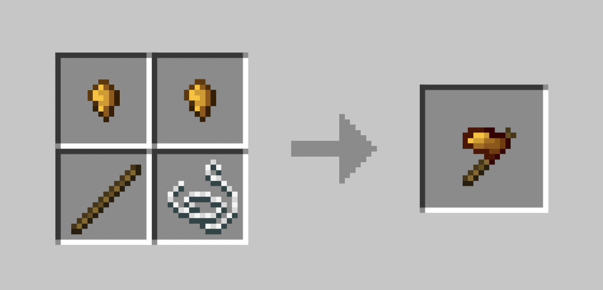

Copper Hatchet
The Copper Hatchet is one of the first semi-metal tools available in Balanced Never Heard Of It. It serves as the player's primary method of harvesting Wood during the early game.
Unlike vanilla axes, the Copper Hatchet is intentionally inefficient. It reflects the player's limited technological understanding at this stage of progression.
Functionality
When used to chop logs, the Copper Hatchet will only drop Rough Wood. This restriction prevents players from bypassing early progression steps and rushing advanced crafting.
The tool has low durability and slow mining speed, reinforcing the importance of careful resource usage.
Crafting
Crafting a Copper Hatchet typically requires processed copper and basic binding components. It represents the transition from stone-age survival to early metallurgy.
Note: The Copper Hatchet is not meant to be a long-term tool and is quickly replaced by more advanced hatchets.